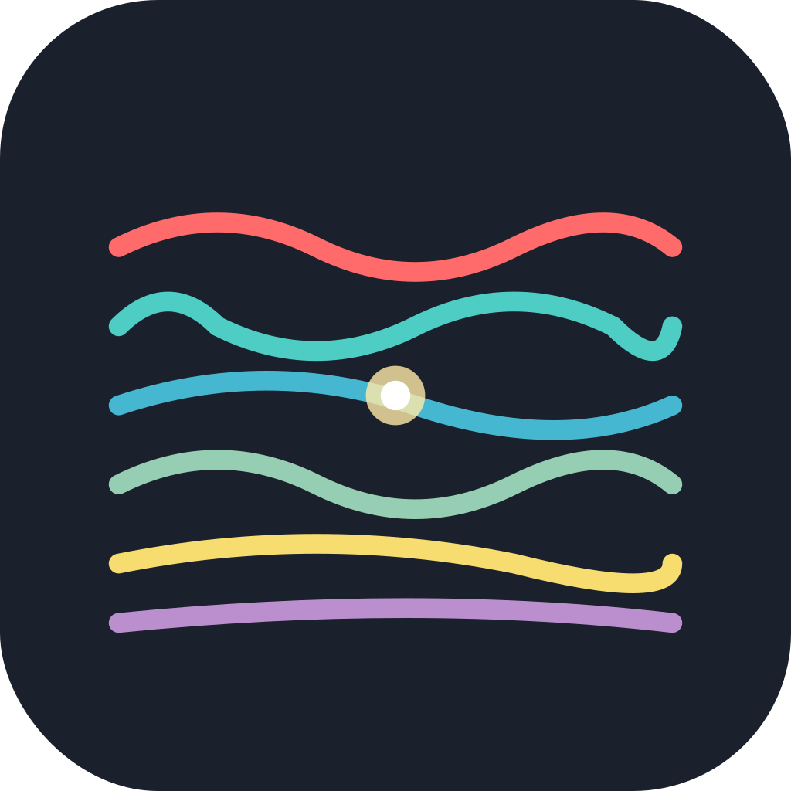

ChordFracture
ChordFractureは、変則チューニングに特化したギター用コードフォーム管理アプリです。
チューニング（例: DADGAD, CGDGCD）の登録・編集、インタラクティブなフレットボードのタップ操作でコードフォームを記録し、タグで整理できます。
名前・チューニング・フレットポジション・メモ・タグで高速検索。リスト/詳細の表示切替、作成日/更新日の表示に対応。オフライン保存、ダークモード、日本語/英語のローカライズに対応しています。
主な機能
- 変則チューニングの管理（作成・編集・タグ付け）
- フレットボードをタップしてコードフォームを保存
- チューニング／コードフォームのタグ管理
- 検索（名前／チューニング／フレットポジション／メモ／タグ）
- リスト/詳細ビュー、作成日/更新日の表示
- オフライン保存、ダークモード
- 日本語/英語ローカライズ
- iPhone / iPad 対応
サポート窓口
アプリに関するご意見や不具合のご連絡は、下記までお願いいたします。
Twitter →
@imael123
メール → appkaihatu8823@gmail.com